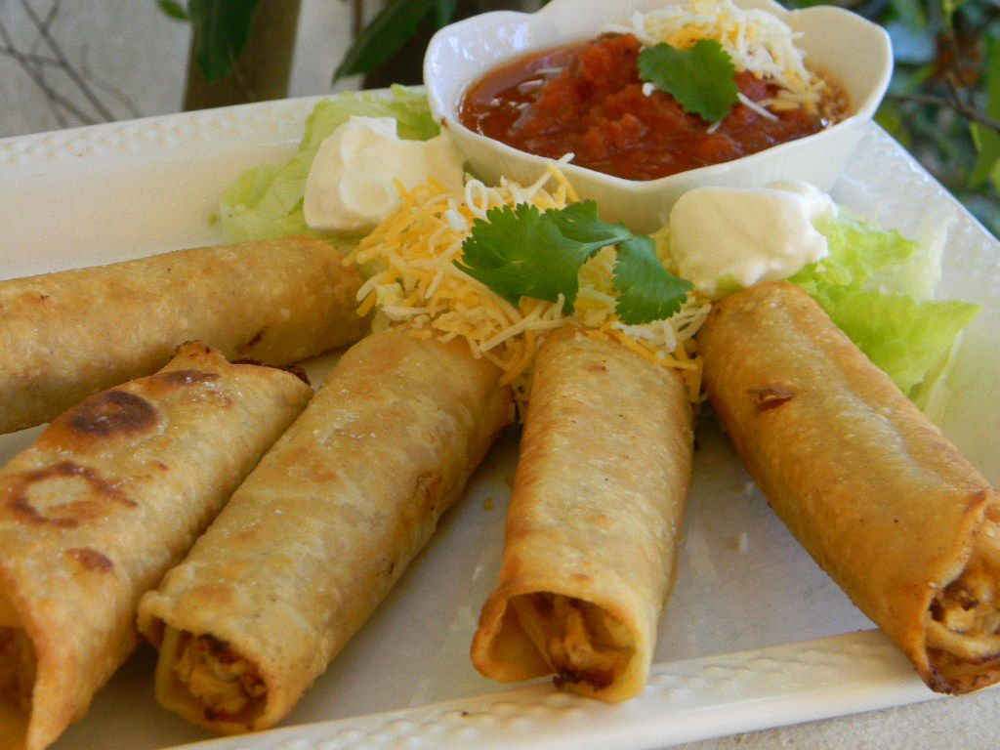

Home
Flautas

Golden, crispy, and irresistibly delicious—flautas are a Mexican delight
that will have your taste buds dancing. These tightly rolled tortillas,
usually filled with tender shredded chicken, savory beef, or creamy cheese,
are fried to a perfect crunch, creating a satisfying contrast between
the crispy exterior and the juicy, flavorful filling inside.
Served piping hot, flautas are often topped with cool, velvety sour cream,
rich guacamole, and a drizzle of zesty salsa, adding layers of freshness
and spice to every bite. A sprinkle of crumbled queso fresco and a side
of crisp shredded lettuce complete this mouthwatering dish, making each
bite an explosion of textures and flavors. Whether enjoyed as a snack, appetizer,
or main course, flautas are pure, crispy perfection—impossible to resist! 🌮🔥
Ingredients
- 1 teaspoon vegetable oil
- ½ green bell pepper, chopped
- ½ onion, finely diced
- 1 pound skinless, boneless chicken breast, cut into 1-inch pieces
- 1 (1 ounce) package taco seasoning mix
- ¾ cup water
- 1 (10 ounce) package corn tortillas (such as Ortega®)
- ½ cup shredded Cheddar cheese
- 1 cup salsa
- 24 toothpicks
- 2 cups vegetable oil for frying
Directions
- Heat 1 teaspoon vegetable oil in a skillet over medium heat. Stir in the
bell pepper and onion; cook and stir until the onion has softened and turned
translucent, about 5 minutes. Increase heat to medium-high and stir in the
chicken breast. Cook and stir until the chicken breast is no longer pink in
the center, about 10 minutes. Shred the chicken using two forks. Stir in the
taco seasoning and water. Simmer until the liquid has evaporated, stirring
occasionally, about 10 minutes. Stir in the Cheddar cheese, then remove from
heat, and set aside.
- Lightly brush each corn tortilla will a layer of salsa. Spread about 2 tablespoons
of the chicken mixture in a line along the bottom edge of the tortilla. Tightly
roll the tortilla into a cylinder, and secure the ends with one or two toothpicks.
Repeat with remaining tortillas.
- Heat 2 cups vegetable oil in a large skillet to 375 degrees F (190 degrees C).
- Fry the flautas in the preheated oil, no more than 4 at a time, until golden and
crisp, about 4 minutes. Drain the flautas on a paper towel-lined plate. Discard
toothpicks and top finished flautas with remaining salsa.